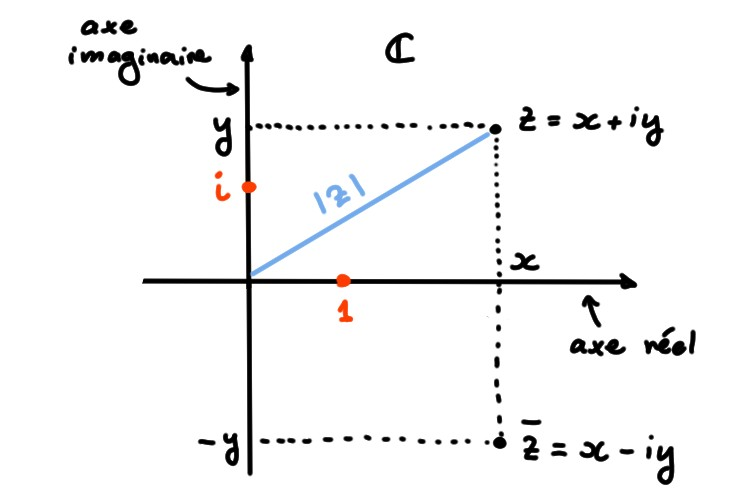
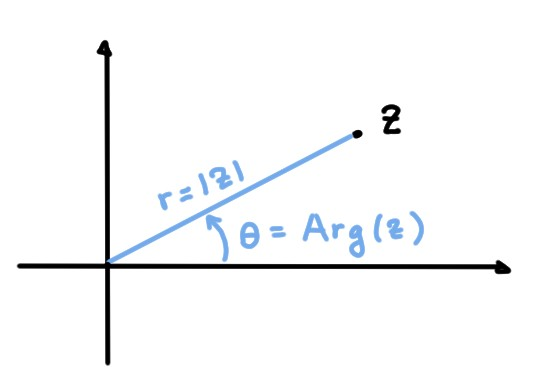
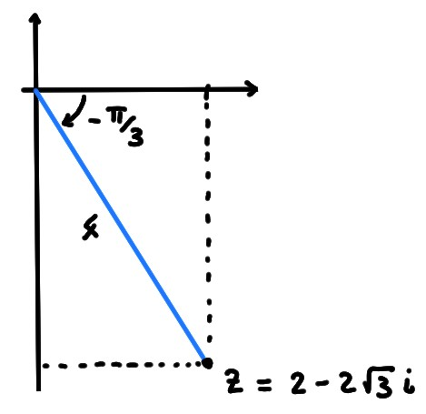

Il est naturel de représenter un
nombre complexe \(z=(x,y)=x+\mathsf{i} y\) à l'aide d'un point
dans le plan cartésien, dont l'abscisse est \(x\) et l'ordonnée \(y\).
On remarque alors que le module \(|z|\) n'est autre que
la distance qui sépare \(z\) de l'origine, et que \(\overline{z}\) est obtenu en
réfléchissant \(z\) à travers l'axe \(Ox\):

Les \(z\) purement réels se trouvent sur l'axe \(Ox\), que l'on nomme alors
l'axe réel, alors que
les \(z\) purement imaginaires se trouvent sur l'axe \(Oy\),
que l'on nomme alors l'axe imaginaire.
On parle alors du plan complexe.
Représentation polaire: module et argument
Mais il existe d'autres façons de repérer un point dans le plan.
Donc on peut associer à tout \(z\in \mathbb{C}\) sa distance à l'origine, donnée par
son module \(|z|=r\), et considérer l'angle orienté
\(\theta\) formé par \(z\) et
l'axe réel:

Si \(z=x+\mathsf{i} y\), on a donc
\[\begin{aligned}
x=\mathrm{Re}(z)&=r\cos \theta\\
y=\mathrm{Im}(z)&=r\sin \theta\,.
\end{aligned}\]
On peut donc écrire \(z\) sous forme polaire:
\[
\boxed{
z=r(\cos \theta+\mathsf{i} \sin \theta)\,.
}
\]
On appelle \(\theta\) l'argument de
\(z\), et on le note \(\theta\equiv \mathrm{Arg }(z)\).
Bien-sûr, \(\theta\) étant défini à un multiple entier de \(2\pi\)
près (puisque sinus et cosinus sont \(2\pi\)-périodiques), il
n'est pas unique. Lorsqu'on considère
l'unique argument pour lequel
\(\theta\in [-\pi,\pi[\), on appelle \(\theta\)
l'argument principal de \(z\).
Si \(z=x+\mathsf{i} y\), et \(x\neq 0\),
son argument \(\theta\) satisfait
\[ \tan\theta= \frac{y}{x}\,.\]
L'unique complexe dont on ne définit pas l'argument est \(z=0\).
Mettons \(z=2-2\sqrt{3}\mathsf{i}\) sous forme polaire, et calculons son argument
principal.
D'abord, \(r=|z|=\sqrt{4+12}=4\), et
donc
\[
z=4\bigl(\tfrac12-\tfrac{\sqrt{3}}{2}\mathsf{i}\bigr)
\]
Comme \(\frac12=\cos (-\frac{\pi}{3})\), \(-\frac{\sqrt{3}}{2}=\sin
(-\frac{\pi}{3})\), l'argument principal de \(z\) est \(\theta=-\frac{\pi}{3}\).
Sa forme polaire peut donc s'écrire
\[z=4\bigl(\cos(-\tfrac{\pi}{3})+\mathsf{i} \sin (-\tfrac{\pi}{3})\bigr)\]

La représentation polaire des nombres complexes représente des avantages
très importants par rapport à la représentation cartésienne.
La principale raison est que l'argument
possède quelques propriétés remarquables, que nous listons dans une proposition.
(Comme l'argument n'est pas défini de manière unique,
il faudrait rajouter partout ''modulo \(2\pi\)''.)
D'abord, on apprend quelque chose sur l'interprétation géométrique de la
multiplication complexe:
Soit \(\omega\in \mathbb{C}\) un nombre complexe de module \(1\): \(|\omega|=1\). Alors
pour tout \(z\in \mathbb{C}\), le complexe \(\omega z\) est obtenu en faisant tourner
\(z\) autour de l'origine, d'un angle de \(\theta=\mathrm{Arg }(\omega)\) (dans le
sens anti-horaire).
En effet, \(\omega z\) a pour module
\(|\omega z|=|z|\), et pour argument
\(\mathrm{Arg }(\omega z)=\mathrm{Arg }(\omega)+\mathrm{Arg }(z)=\mathrm{Arg }(z)+\theta\).
Deuxième conséquence: formule de de Moivre
En multipliant \(z=r(\cos \theta+\mathsf{i} \sin \theta)\) par lui-même,
\[ z^2=r^2\bigl(
\cos(2\theta)+\mathsf{i} \sin (2\theta)
\bigr) \]
que l'on peut généraliser:
(Formule de de Moivre)
Si \(z=r(\cos \theta+\mathsf{i} \sin \theta)\), alors pour tout entier \(n\geqslant 2\),
\[
\boxed{z^n=r^n\bigl(
\cos(n\theta)+\mathsf{i} \sin (n\theta)
\bigr)}
\]
Soit \(z=r(\cos \theta+\mathsf{i} \sin \theta)\).
Pour \(n=2\), on sait que \(|z^2|=r^2\), et que
\(\mathrm{Arg }(z^2)=2\mathrm{Arg }(z)=2\theta\), et donc la formule est vérifiée:
\[ z^2=r^2(\cos(2\theta)+\mathsf{i} \sin(2\theta))\,
\]
Si on suppose que la formule est
vraie pour \(n\), calculons
\[\begin{aligned}
z^{n+1}&=z\cdot z^n\\
&=
r(\cos \theta+\mathsf{i} \sin \theta)
\cdot
r^n\bigl(
\cos(n\theta)+\mathsf{i} \sin (n\theta)
\bigr) \\
&=r^{n+1}\Bigl(
\bigl(\cos(\theta)\cos(n\theta)-\sin(\theta)\sin(n\theta)\bigr)\\
&\phantom{xxxxxxxxxxxx}+\mathsf{i}
\bigl(\cos(\theta)\sin(n\theta)+\sin(\theta)\cos(n\theta)
\bigr)
\Bigr)\\
&=r^{n+1}\bigl(\cos((n+1)\theta)+\mathsf{i} \sin((n+1)\theta)\bigr)\,,
\end{aligned}\]
ce qui montre que la formule est vraie aussi pour \(n+1\).
Parmi les identités suivantes, lesquelles sont correctes?
[ ] \(\mathrm{Arg }(z+z')=\mathrm{Arg }(z)+\mathrm{Arg }(z')\) pour tous \(z,z'\in
\mathbb{C}\)
[ ] \(\mathrm{Arg }(\lambda z)=\lambda \mathrm{Arg }(z)\) pour tous \(\lambda\in
\mathbb{R}\), \(z\in \mathbb{C}\)
[ ] \(\mathrm{Arg }(z^{-1})=\mathrm{Arg }(\overline{z})\) pour tout \(z\in \mathbb{C}\setminus\mathbb{R}\)
[ ] \(|\mathrm{Arg }(z)|=\mathrm{Arg }(|z|)\) pour tout \(z\in \mathbb{C}\)
[ ] \(|\mathrm{Arg }(z)|=\mathrm{Arg }(|z|)\) pour tout \(z\in \mathbb{R}\)
Parmi les identités suivantes, lesquelles sont correctes?
[ ] \(\overline{z}=z\) si et seulement \(z\in \mathbb{R}\)
[ ] \(\overline{z}=-z\) si et seulement si \(z\) est purement imaginaire
[ ] \(\overline{2+z}=2-\overline{z}\)
[ ] \(\overline{z^{-1}}=\overline{z}^{-1}\) pour tout \(z\neq 0\)
[ ] \(z^2\geqslant 0\) pour tout \(z\in \mathbb{C}\)